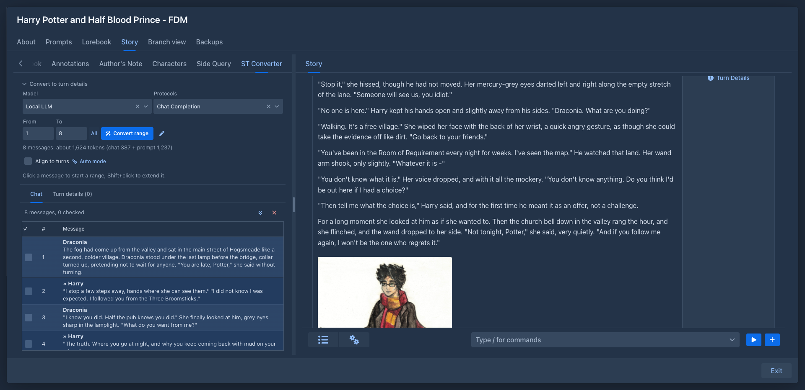
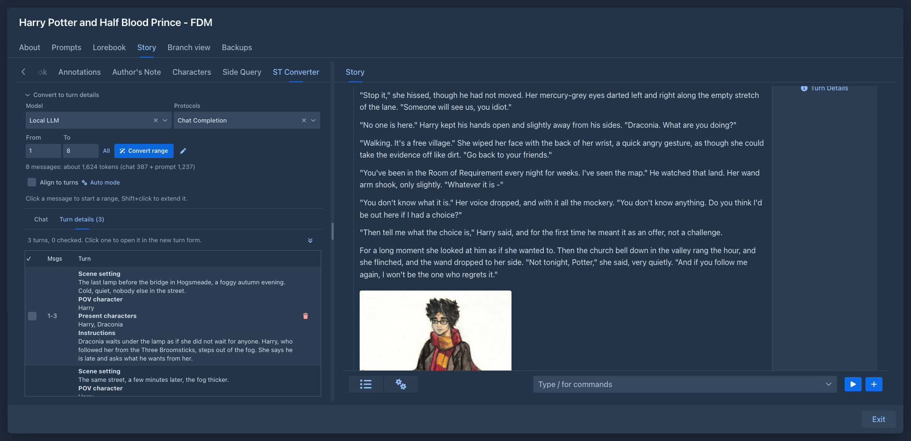

Converter
This extension was called SillyTavern Converter before 1.6.0. Only the name changed; its files, the data stored with your books and the saved layouts are the same.
Rewrite a SillyTavern roleplay chat as a story, turn by turn: load the chat into a book, let the model split it into turn details using the chat and the lore of the book, and put each turn into the new turn form of the story with one click.
The source does not have to be a chat: the converter can also take the parts of another book of yours (from a backup file or
the book itself) and give you their instructions one by one, to
To make a book out of a chat directly (every message, or every user and assistant pair, a part), see Importing from SillyTavern. The converter is for the other way: you keep the chat next to you and write the story again, with the model, from instructions made of the chat.
The Converter works in the phone layout too, see
The Converter tab
The left sidebar of the story editor gets a Converter tab (small text, and the tab scrolls when the sidebar is low). Above its two lists is the section Convert to turn details, closed until you open it so that the lists get the room. It holds:
Align to turns
A turn of the story is the messages of the user (the instructions) followed by the message of the character. With Align to turns ticked, every range you choose (by clicking, typing the numbers or All) is moved to the boundaries of the turns: the start goes back to the first message of its turn, and the end goes back to the last message of the character before it, so the range never ends on a message of the user that belongs to the turn after it. The end of the chat stays where it is. A range that lies wholly in the messages of the user before a reply is extended forward to that reply.
Auto mode
Auto mode shows a line with Messages per batch, the button Convert in batches and how many requests that makes, with the tokens they take in all. The button splits the current range into batches of that many messages and sends them to the model one after another (after asking), the same as the wand does for one range. With Align to turns every batch ends at the end of a turn (the last message of the character within the size, or the end of the turn when it is longer than the size), so no turn is cut in two; without it the batches are cut exactly by the number, and a turn on the border can be split in two.
While it runs the chat shows the batch it is at, the status line tells which batch of how many, and the button becomes Stop. The turn details of each batch are stored as soon as it is done, as with the wand (the turns that touch the range and that you have not ticked are replaced). When all batches are done the range is as you had it and the Turn details tab opens. A batch whose answer can't be used (empty, or not matching what was asked for) is sent again, up to three times in all. When you stop, or a batch still fails, the notification says why and the range is what is left, so you can go on from there.
What a range continues from
The prompt tells the model the details of the last turn that ends before the range (its scene setting, POV character, present characters and instructions, in ``), so the turns of the range keep the same point of view and scene until the chat changes them. This is how a batch of the auto mode continues from the one before it: the turn details of a batch are stored before the next one is sent. When there is no turn before the range the part of the prompt is left out.
The chat
Upload the .jsonl file of a chat (in SillyTavern it is in data/<user>/chats/<character>/, or export it from the
chat). The chat must have no branches: of every message the swipe that was shown is read, and hidden system messages and
empty ones are left out. If your chat has branches, import the one you want to rewrite first (see
Importing from SillyTavern for joining branches into a tree).
The Chat tab is a table of the messages: a checkbox, the number and the message, with the name of who said it in bold above the
text (the messages of the user are marked with »).
-
Tick the checkbox of a message you have gone through, so you can see what is left. The button with the double arrow above the table scrolls to the next unchecked message (after the one you ticked or clicked last, starting again from the top at the end).
-
Click a message to make it the range, Shift+click another to extend the range up to it. The range is highlighted and the token count follows.
-
The button with the cross above the table removes the chat and the turn details from the book (after asking).

Turn details
Use the wand and the Turn details tab opens with what the model prepared, in the order of the chat. A row is a turn: the messages it is made from and, in one element, the scene setting, the POV character, the characters who are present and the instructions, each under a bold line with its name. The model is told to cover every message of the range exactly once; numbers outside of the range are cut to it.
-
Click a row to open the new turn form of the story and copy all four fields of the turn into it. Change what you want and generate. (A row's checkbox and delete button do not open the form.)
-
Tick the checkbox of a turn you have used; the double arrow goes to the next unchecked turn.
-
Running the wand again for a range replaces the earlier turns that touch the range, except the ticked ones.

Redrafting a book
To write a book again, part by part, load the old one as the source. The tab shows Upload a chat, Load a backup and Pick a book while it has no source:
-
Pick a book opens a list of your books (not the one you are in). The parts of the branch the book is on are loaded, from the first part to the one the book is at now.
-
Load a backup takes a backup file of a book: the JSON, the
.zipwith the images, or a file you downloaded from the backups of a book. The backup is only read, nothing is restored. The branch is the one the book was on when the backup was made.
Of every part the converter keeps the instructions, the scene setting, the POV character, the present characters and the text of the part, and nothing else (no summaries, lorebook, reasoning, images, other branches or settings), so a long book stays small. A book that has no parts loads nothing, and a backup whose parts do not lead back to the first part is refused as damaged.
The tab then has two lists, as with a chat but without the wand (the book already has its instructions, so the Convert to turn details section is not there):
-
Parts is the text of each part, with the same checkbox and the arrow to the next unchecked part. Read the old text next to the story you write.
-
Turn details has one row per part with its scene setting, POV character, present characters and instructions. Click a row to put them into the new turn form of the story, as with a chat, and generate the new part. Tick the turns you have done.
Only one source is kept with a book. To load another, remove the current one with the cross (after asking); this also forgets the ticks made on it.
On a phone
In the phone layout the Converter tab is in the drawer of the story, next to the outline and the other tabs of extensions (open the drawer with the button at the top left of the story). Everything above works the same, with these differences:
-
There is no Shift key, so the range is chosen with two taps: tap a message to start the range, tap another to end it (the range is from the one to the other, in whichever order); the next tap starts a new range. You can also type From and To or use All.
-
The turn details have no column for the numbers of the messages: they are the first line of each turn (Msgs).
-
Tap a turn and the drawer closes and the new turn form of the story opens with the four fields in it.
-
The tab is easier to use in landscape mode; the dialogs (the prompt of the wand, the choice of a book) fit the screen.
Storage
The uploaded file is stored as a resource of yours (a chat of SillyTavern can be megabytes, with all
that SillyTavern adds to the messages), linked to the book. The parts of a book are stored the same way as a small JSON
file (<book name>.redraft.json) with the instructions and the text; the book keeps only the ticks. The ticks, the turn details, the model and the prompt are stored in
the attributes of the book, so they are in book backups and copies.
The file of the chat is not in book backups, and a copy of a book points to the same file. After a restore the ticks and turn details are there, but the converter asks for the chat again (upload the same file; this replaces the turn details and the ticks). The same goes for the parts of a book: load the book or the backup again and tick again. Removing the source with the cross deletes the resource.